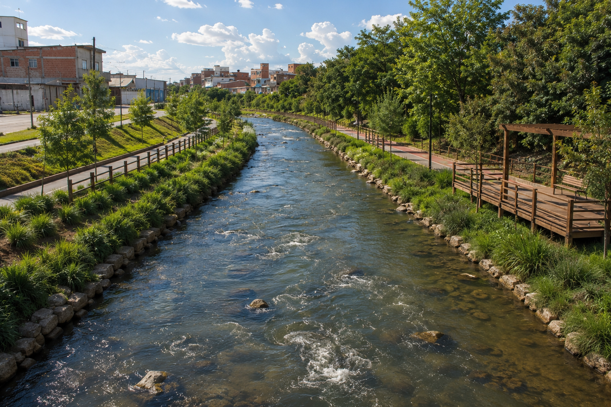
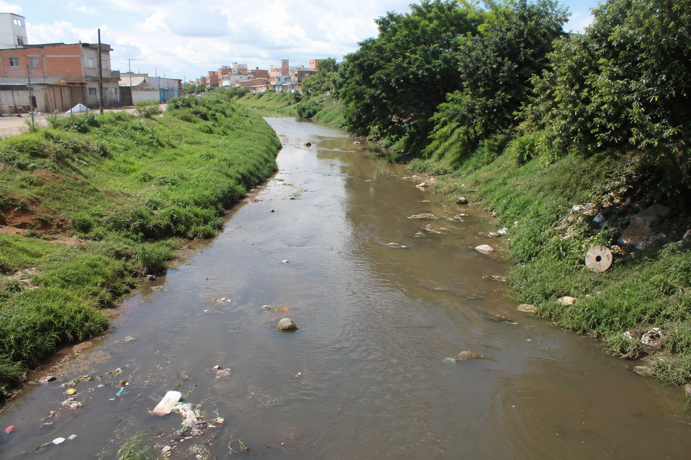

Projeto Parque Linear Carahá
O Projeto Parque Linear Carahá propõe a revitalização das margens do Rio Carahá em Lages (SC), criando um espaço sustentável que integra natureza, lazer e mobilidade urbana.
Saiba mais sobre as ODS
Situação atual do Rio Carahá
O Rio Carahá sofre com impactos urbanos como poluição, ocupação irregular das margens e redução da vegetação nativa. Esses problemas afetam o equilíbrio ambiental e a qualidade de vida da população de Lages.
Contribuir com o projeto🌱 Objetivo do Projeto
Revitalizar o Rio Carahá, promover sustentabilidade, melhorar a qualidade ambiental e criar um espaço público acessível para a população.
🌿 Por que esse projeto é importante?
O Rio Carahá sofre com impactos urbanos. O parque linear busca recuperar áreas degradadas e aproximar a cidade da natureza.
🌳 Preservação Ambiental
Proteção da mata ciliar, recuperação do rio e aumento da biodiversidade local.
🚴 Mobilidade Urbana
Ciclovias e caminhos para deslocamento sustentável entre bairros.
❤️ Qualidade de Vida
Mais lazer, esporte e bem-estar para a população de Lages.
🌍 ODS Relacionadas
- 💧 ODS 6 — Água Limpa e Saneamento
- 🌎 ODS 13 — Ação Climática
- 🌊 ODS 14 — Vida na Água
- 🌳 ODS 15 — Vida Terrestre
🪨 Aspectos Geológicos
Lages está no Planalto Serrano Catarinense, com solos vulcânicos que favorecem vegetação e projetos de recuperação ambiental.
🤝 Participe do Projeto
Sua participação ajuda a construir uma cidade mais sustentável e com melhor qualidade de vida.
Enviar sugestão